Research Hub/The season on YouTube so far: 106 days/La Liga
YouTube Football Tracker · La Liga 2026/27
How the 20 clubs and the league channel publish, who gets watched and who goes quiet, then the season's biggest videos and what they have in common, read chart by chart.
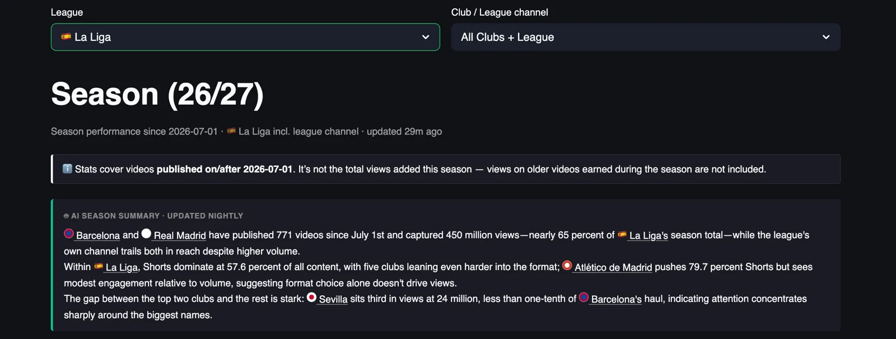
Barcelona and Real Madrid have taken 535.6 million of the 920 million views La Liga channels have collected on YouTube since 1 July, 58% of the season total from 929 videos, and the official league channel sits between them in second place with 228.8 million views from about 1,100 uploads, more than any club has published and well under half the 505.2 thousand views per video Real Madrid gets.
Shorts are 56.6% of what the league and its clubs publish and they bring in 62% of the views, with Sevilla as the extreme case, 35.9 million of its 37.4 million views from 107 Shorts, and Atlético de Madrid as the counter-example, 348 Shorts out of 442 videos for 32.5 million views and a lower average per Short than Sevilla, Barcelona, Real Madrid or Real Betis. Below the top two the drop is steep, because Sevilla in third has 37.4 million views, about a ninth of Barcelona's 326.4 million.
This is the summary the tracker writes for itself every night, with the numbers corrected against the table below it, and part one of this piece takes the dashboard apart one chart at a time, to show what sits under those three sentences, and part two looks at the biggest individual videos of the season.
Scope: videos published on or after 1 July 2026 on the 20 La Liga club channels plus the official league channel, 6,626 videos over 106 days, snapshot of 15 October 2026. Views on older videos earned during the season are not counted.
YouTube Football Tracker
The YouTube Football Tracker follows more than 100 club and league channels across the top five European leagues, plus the road to the World Cup 2026, with daily recaps, season trends and all-time leaderboards, updated every night. If you run YouTube for a club or a league, it is the quickest way to see what your rivals publish, when and in which format, and which of their videos actually travel, so you can learn from them before you plan your own. If you are a sports journalist, it shows you which stories, clubs and formats work on YouTube this week, with the numbers to back the piece. Open the tracker and start with your own league, and if you want a deeper read for your club or your newsroom, message me on LinkedIn.
Explore the YouTube Football TrackerYou can find me on LinkedIn, read my LinkedIn newsletter or find me on Substack.
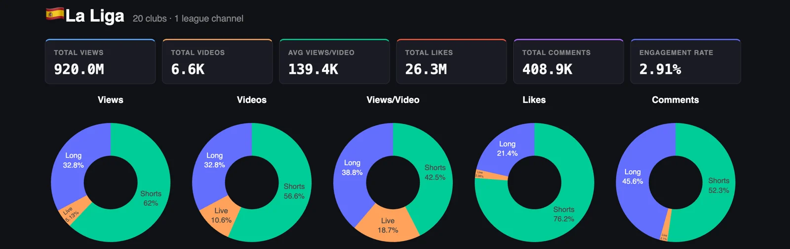
Since 1 July the 21 channels have published about 6,600 videos and collected 920 million views, 26.3 million likes and 408.9 thousand comments, which works out at 139.4 thousand views per video and an engagement rate of 2.91%, so La Liga publishes half as many videos again as Serie A and gets three times the views.
The donuts say where that comes from. Shorts are 56.6% of what the channels publish and they bring in 62% of the views and 76.2% of the likes, while long-form, at 32.8% of output, takes 32.8% of the views and 45.6% of the comments, so a Short earns the heart and a long video earns the conversation, the same division of labour as in Italy. Live is 10.6% of uploads and 5.1% of views, and in the views-per-video donut it takes 18.7%, so the average stream does well and a handful of very big ones at Barcelona and Real Madrid carry that figure.
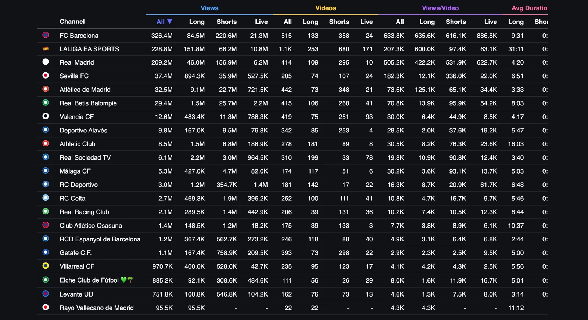
Barcelona sits on top with 326.4 million views from 515 videos, with 220.6 million of those views from 358 Shorts, and the club wins on every per-video line in the table, 635.6 thousand for long-form, 616.1 thousand for Shorts and 886.8 thousand for its 24 live streams. The league channel is second with 228.8 million, built on 253 long-form videos that bring 151.8 million views, and Real Madrid is third with 209.2 million from 414 videos, 156.9 million of them from 295 Shorts that average 531.9 thousand each.
After Real Madrid the table drops from 209.2 million to Sevilla at 37.4 million, Atlético at 32.5 million and Betis at 29.4 million, and those three are built very differently, because Sevilla gets 96% of its views from Shorts, Atlético gets a long-form average of 125.1 thousand that is nearly double its Shorts average, and Betis gets 87% of its views from Shorts that average 95.9 thousand against 13.9 thousand for its long-form. At the other end Rayo Vallecano has 95.5 thousand views from 22 videos, all of them long-form, with no Shorts and no live streams in the whole window, and Getafe has published 393 videos for 1.1 million views, 2.9 thousand per video, the lowest average in the league.
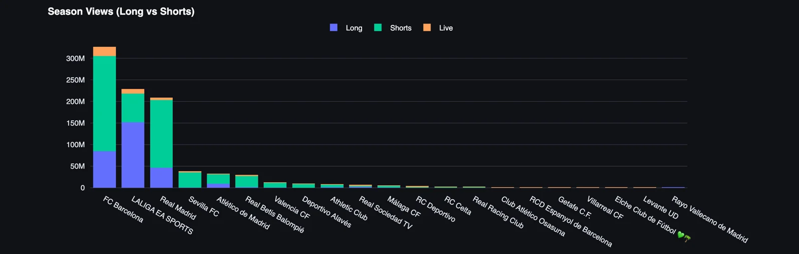
Three channels are above 200 million and everybody else is below 40 million. Barcelona, the league channel and Real Madrid add up to 764.4 million views, 83% of the 920 million total, and the other 18 clubs share what is left, with Sevilla, Atlético and Betis taking most of that and the remaining 15 clubs together below 60 million.
Barcelona takes 220.6 million of its 326.4 million views from Shorts, 68% of the total, and its long-form holds up next to them, with 133 videos averaging 635.6 thousand against 616.1 thousand for its Shorts, so Barcelona has two reach engines of the same size and the vertical feed wins on volume. Its live streams average 886.8 thousand views, the best live average in the league, from 24 streams.
Real Madrid gets 75% of its views from Shorts, 156.9 million from 295 videos that average 531.9 thousand, and its 109 long-form videos average 422.2 thousand, so the gap between the two formats is about 26% in favour of Shorts. Real Madrid publishes 101 fewer videos than Barcelona and gets 505.2 thousand views per video against 633.8 thousand, so Barcelona wins on both volume and return.
LALIGA EA SPORTS, the league channel, is the opposite shape, with 151.8 million of its 228.8 million views, 66%, coming from 253 long-form videos that average 600 thousand each, which is half of all the long-form views in La Liga this season from one channel. Its 680 Shorts average 97.4 thousand, about a sixth of a Barcelona or Real Madrid Short, so the league wins the match highlight and loses the feed.
Sevilla, in fourth, is the purest Shorts channel in the top half, with 35.9 million of its 37.4 million views from 107 Shorts averaging 336 thousand, the third best Shorts average in the league behind the two giants, and 74 long-form videos averaging 12.1 thousand, so a Sevilla Short gets about 28 times the views of a Sevilla long-form video.
Atlético, in fifth, has made the opposite bet, with 348 of its 442 videos as Shorts averaging 65.1 thousand, and its 73 long-form videos average 125.1 thousand, nearly twice as much, and Betis in sixth has gone the Sevilla way with 268 Shorts averaging 95.9 thousand, seven times its long-form. Atlético is the club in this list that has found the format that works and still publishes four times more of the other one.
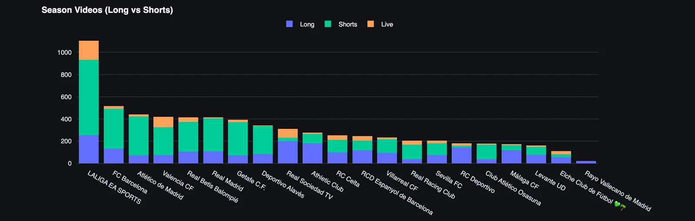
The league channel leads on volume with about 1,100 videos, 680 of them Shorts and 171 live streams, more than double Barcelona at 515, and then Atlético at 442, Valencia at 419, Betis at 415 and Real Madrid at 414 sit within 30 videos of each other, so volume in the middle of the table is flat and views are anything but. Valencia has published 419 videos for 12.6 million views and Real Madrid 414 for 209.2 million, which is the whole league in one comparison.
Getafe has published 393 videos, sixth among the clubs, for 1.1 million views, and Osasuna has published 175 for 1.4 million, so Getafe uploads more than twice as often and gets less in total. Valencia has run 93 live streams, more than any other club, for an average of 8.5 thousand views each, and Real Sociedad has published 199 long-form videos, more than any club and only 54 fewer than the league channel, for an average of 10.9 thousand.
Rayo Vallecano, at 22 videos, is the least active channel by a distance, which is one upload every five days, and Elche at 111 is next, roughly one a day. Rayo appears in the hashtag of the most-liked video of the season, which is on Sevilla's channel, and that is about as visible as the club has been on YouTube since July.
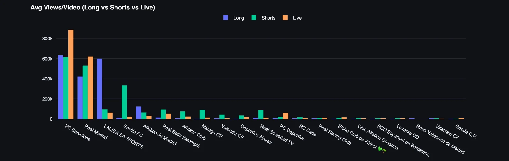
Views per video puts the volume race in context. Barcelona averages 633.8 thousand views per video and Real Madrid 505.2 thousand, and the league channel, which publishes more than both, averages 207.3 thousand, so the league publishes 114% more than Barcelona and gets a third of the views per upload, and its 600 thousand average for long-form is the one line where it competes with the top two.
The split by format tells each club where its audience is. Atlético's long-form averages 125.1 thousand, almost twice its own Shorts at 65.1 thousand, from 73 videos, so Atlético has an audience for long-form and spends 79% of its output on the format that earns less per video. Athletic Club has the same problem the other way round, with 181 long-form videos averaging 8.2 thousand and 89 Shorts averaging 76.3 thousand, nine times more, and Deportivo's 22 live streams average 61.7 thousand against 8.7 thousand for its 142 long-form videos, seven times more. In all three cases the club has found the format that works and makes very little of it, which is the cheapest growth on this page.
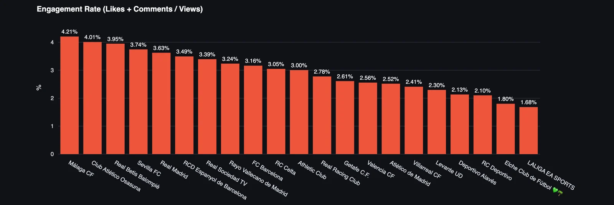
The ranking turns over, with Málaga at 4.21%, Osasuna at 4.01%, Betis at 3.95% and Sevilla at 3.74% at the top, and then Real Madrid at 3.63%, which is the line to look at, because the second biggest club channel in the league with 209.2 million views sits fifth for engagement, and Barcelona at 3.16% is ninth with a 68% Shorts share against 75% for Real Madrid, so the format mix alone does not explain the gap. Rayo at 3.24% from 22 long-form videos says the fans are there when the club posts, which makes its 22 videos harder to explain. The league channel at 1.68% is last, which I would expect from a channel nobody supports, and Elche at 1.80% is the lowest club.
Reach and engagement point in different directions for most of the table, with Málaga and Osasuna turning the biggest share of their viewers into people who react from 5.3 million and 1.4 million views, and Real Madrid is the exception that proves it is possible to have both.
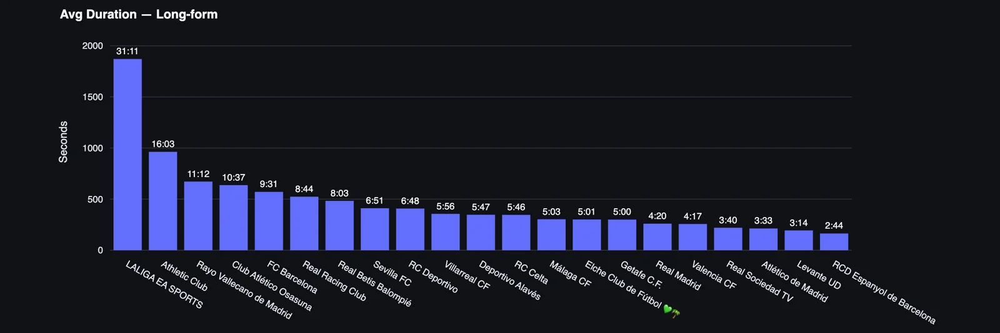
At 31:11 on average the league channel makes the longest long-form videos in La Liga, which is the length of extended highlights and full-match replays, followed by Athletic at 16:03, Rayo at 11:12, Osasuna at 10:37 and Barcelona at 9:31. At the bottom Espanyol averages 2:44, Levante 3:14, Atlético 3:33 and Real Madrid 4:20, which is clip length published in the long-form slot, and Real Madrid gets 422.2 thousand views each for those four-minute videos.
Read this next to the length of Shorts and two approaches appear, because Barcelona pairs nine-minute long-form with some of the shortest Shorts in the league, and the league channel pairs half-hour long-form with Shorts of average length.
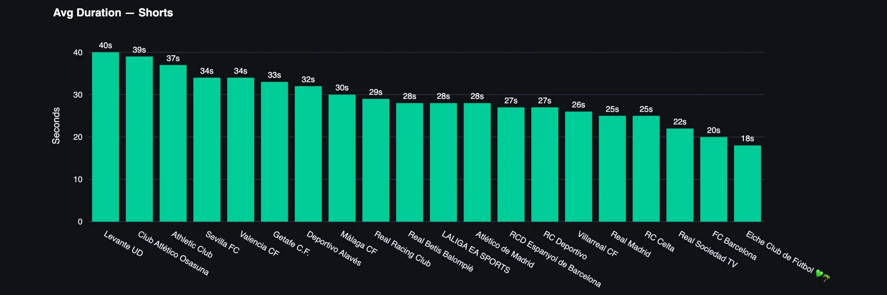
Levante's Shorts average 40 seconds, Osasuna's 39 and Athletic's 37, and then most of the league sits between 25 and 34 seconds, with Sevilla and Valencia at 34, the league channel at 28 and Real Madrid at 25. Barcelona and Elche are at the bottom with 20 and 18 seconds.
Barcelona runs a barbell, with nine-and-a-half-minute long-form and twenty-second Shorts, and that barbell has produced the biggest channel in the league this season with the best Shorts average, 616.1 thousand. Sevilla gets its 336 thousand per Short from a 34-second average, so length on its own does not decide the average, and Elche is doing the Barcelona length with the lowest club engagement rate, which is a pairing I would want to test before I kept going.
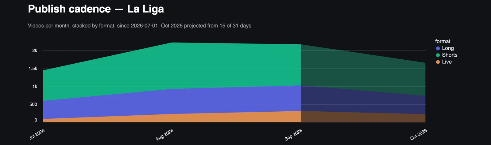
Output grew from roughly 1,450 videos in July to about 2,150 in August and held near that level in September, and long-form grew with it, from around 600 a month in July to about 1,000 in September, so the extra volume came from clubs publishing more of everything once the season started. October is projected around 1,650, a fifth below September, and the projection is built on 15 of 31 days that include an international break, so treat it as an early read.
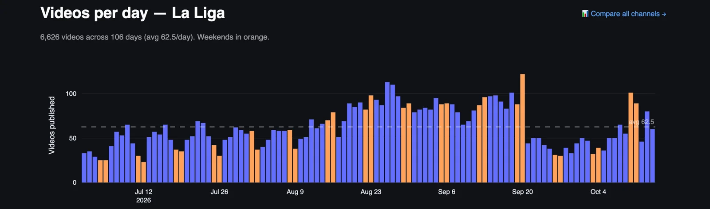
Early July runs at 25 to 35 videos a day, which is pre-season, tours and kit launches, and the daily count climbs through August to the busiest stretch in the last week of August and the first three weeks of September, with several days above 100 and the busiest single day a Saturday around 20 September at about 120.
After that Saturday the count falls to between 30 and 50 a day for the rest of September and the first days of October, before a weekend around 10 and 11 October back near 100, so the rhythm of the league as a whole follows the fixture list more than the calendar. For a club the useful number is the average, 62.5 La Liga videos a day, about half as much again as Serie A, which is how much other La Liga content every upload competes with for the attention of the same fans.
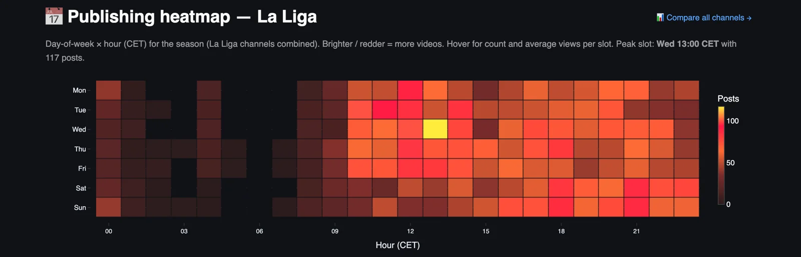
The peak slot is Wednesday at 13:00 CET, with 117 posts, and the working day from 09:00 to 23:00 is where almost everything happens, with Tuesday and Wednesday lunchtime and Saturday and Sunday evening from 18:00 to 23:00 as the busiest bands. The night is close to empty, and the morning before 07:00 is empty on every day of the week.
Wednesday lunchtime as the busiest hour of the week says that La Liga clubs treat midweek as the content day, with training, press conferences and the preview for the weekend, and the weekend evening band is match content going out while the game is still in people's heads. Both are the hours everyone else is publishing, so a club with a smaller audience could try the quieter slots and see whether it gets more of the feed.
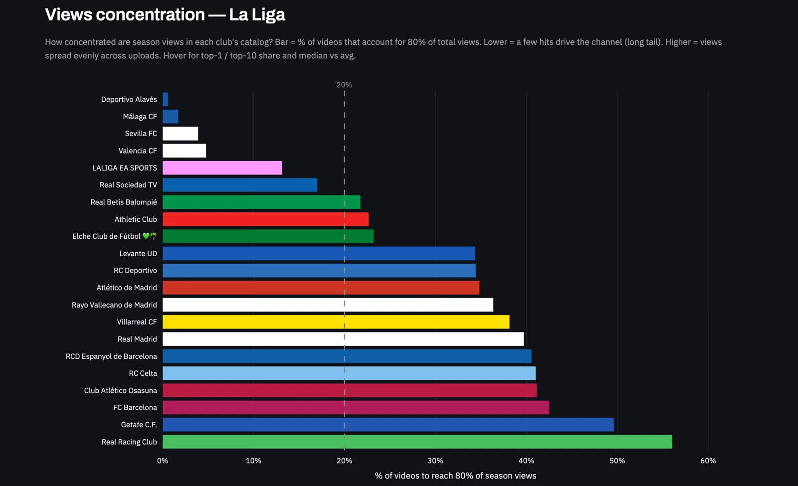
About 13% of the videos produce 80% of the views across La Liga this season, a sharper split than the 20% of a textbook Pareto, which is what a league looks like when two clubs and the league channel hold 83% of the views and 253 league highlights average 600 thousand each. The hits of three channels carry the league, and the rest of the catalogue is there to keep the channels alive and the algorithm fed.
In the tracker the same chart works per club, so a club can see whether it lives on a handful of viral videos or spreads its views evenly, and those are two very different editorial problems.
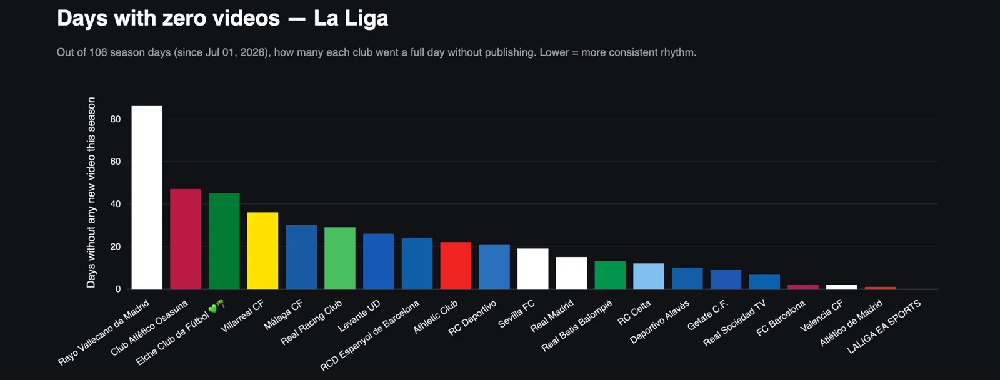
Nobody at the league channel has taken a day off since July, Atlético has missed about one, Barcelona and Valencia about two and Real Sociedad about seven, with Getafe, Alavés and Celta all around ten. At the other end Rayo Vallecano went about 86 days of the 106 without publishing, Osasuna about 47 and Elche about 45, which means Rayo is silent on four days out of five, and Villarreal at about 36 missed days is a top-flight club publishing on two days in three.
Rayo is the surprise of the whole dashboard, a Madrid club with a good engagement rate sitting alone at the top of this chart with 22 videos and no Shorts. Consistency is the cheapest thing on this page to fix, and the three channels with the fewest missed days include two of the three at the top of the views chart.
Part two
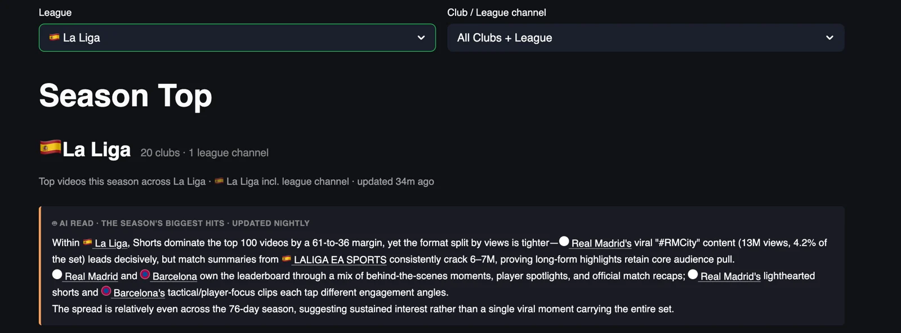
Part one looked at channels, and part two looks at videos, the 100 most-watched La Liga uploads since 1 July, which add up to 379.3 million views, 3.8 million per video on average, at an average age of 49 days, and together they hold 41% of all the views in the league this season. Real Madrid owns the top of the list with a nineteen-second Short about the sound a firework makes, the most-watched video of the season with 13.8 million views, and the league channel follows with the highlights of Barcelona 7-2 Racing at 9.0 million.
Shorts take 59 of the top 100 and long-form 37, and the long-form entries are almost all league channel match highlights, 3:15 long and titled the same way every time, so the list splits into two products, club Shorts about players and league highlights about matches. The most-watched video holds 3.6% of the top 100 views, so the season has no single viral monster and the list is built from a long run of trophy lifts, tunnels, training clips and big scorelines.
For a club social team this is the list to learn from, and for a journalist it is the closest thing to a record of what La Liga fans chose to watch, like and argue about this autumn.
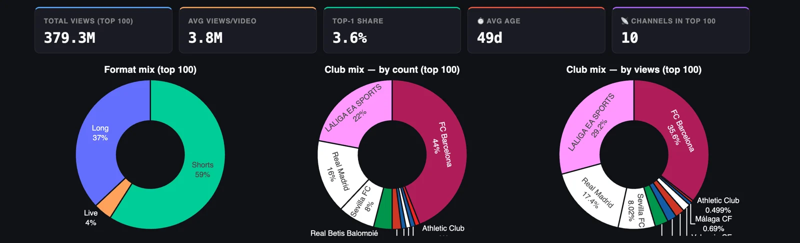
Ten channels place a video in the top 100, and three of them take almost all of it. Barcelona has 44% of the videos and 35.6% of the views, the league channel has 22% of the videos and 29.2% of the views, and Real Madrid has 16% of the videos and 17.4% of the views, with Sevilla at 8% of the videos and 8.02% of the views, and Betis, Atlético, Alavés, Valencia, Athletic and Málaga sharing the last ten entries.
Eleven clubs have no video in the top 100, and the league channel earns a bigger share of the views than of the entries, 29.2% against 22%, because its highlights average more than the club Shorts around them in the list, while Barcelona places more videos than anyone and earns less per entry. Barcelona wins the top 100 on breadth, with 44 videos that travel, and the league wins it on the size of each hit.
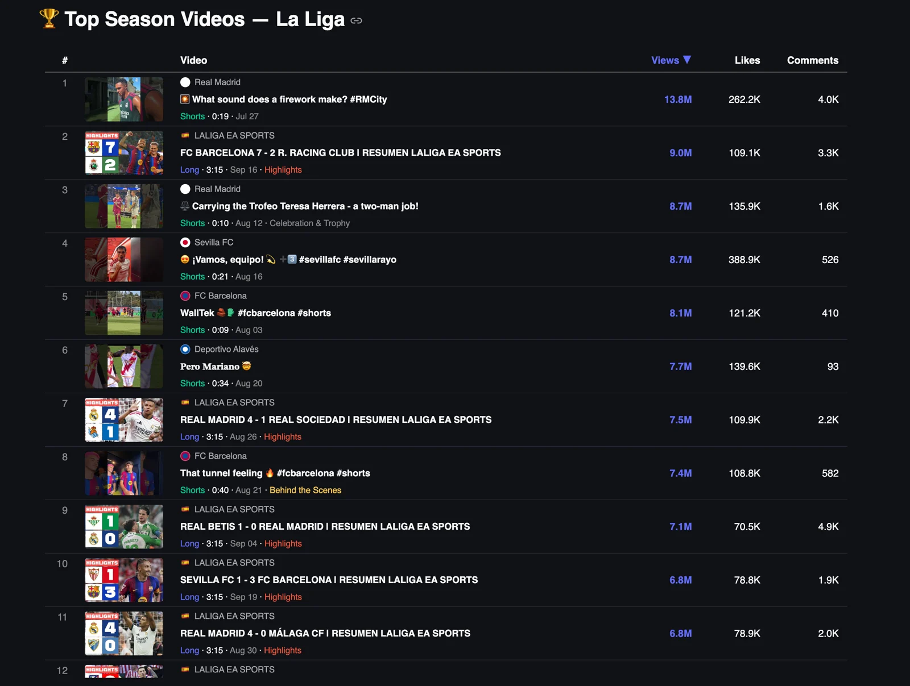
Six of the top eleven are Shorts under 41 seconds and none of the six is a match highlight, with Real Madrid's firework clip from 27 July at 13.8 million, a ten-second video of two players carrying the Trofeo Teresa Herrera at 8.7 million, Sevilla's celebration Short tagged for the Rayo match at 8.7 million, a nine-second Barcelona training clip called WallTek at 8.1 million, an Alavés Short called Pero Mariano at 7.7 million and Barcelona's tunnel video at 7.4 million. The firework clip went out in the fourth week of the season window and is still first, so a good Short keeps travelling for months.
The five league channel entries are all match highlights, all 3:15 long, and they add up to 37.2 million views, with Barcelona 7-2 Racing at 9.0 million, Real Madrid 4-1 Real Sociedad at 7.5 million, Betis 1-0 Real Madrid at 7.1 million, Sevilla 1-3 Barcelona at 6.8 million and Real Madrid 4-0 Málaga at 6.8 million. A Real Madrid or Barcelona scoreline sells the video whoever the opponent is, and the one upset in the list, Betis beating Real Madrid, has the most comments of any video in the league.
Alavés is the entry that tells a smaller club most, because a 34-second Short with 7.7 million views and 93 comments sits sixth in a list otherwise owned by the two giants, the league and Sevilla, from a channel with 9.8 million views for the whole season, so 78% of what Alavés has earned since July came from one upload.
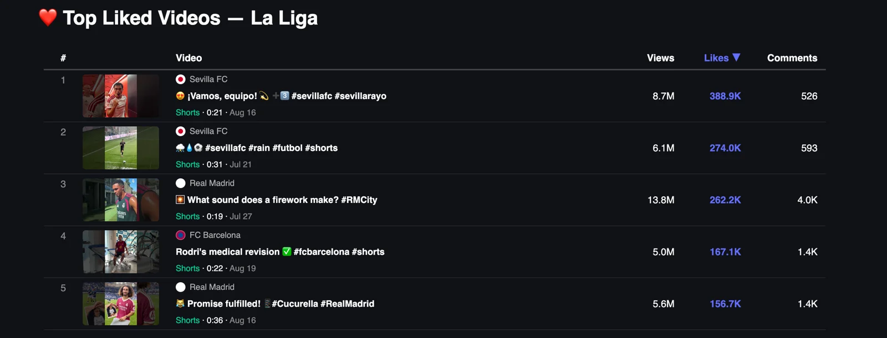
The most-liked video of the season is Sevilla's celebration Short, with 388.9 thousand likes from 8.7 million views, a like rate of 4.5%, and Sevilla also has second place with a 31-second training clip in the rain from 21 July, 274 thousand likes from 6.1 million views at the same 4.5%. Real Madrid's firework clip is third with 262.2 thousand likes at 1.9%, well under half the Sevilla rate from more than twice the views, and Barcelona's video of Rodri's medical at 3.3% and Real Madrid's Cucurella clip at 2.8% complete the five.
Likes go to the club's own moments, a celebration, a training session, an arrival, and none of the five is a match highlight, so they need no rights window and can go out the same day they are shot, and Sevilla's two entries say that a mid-table channel can beat the giants on the reaction per view when the video is its own.
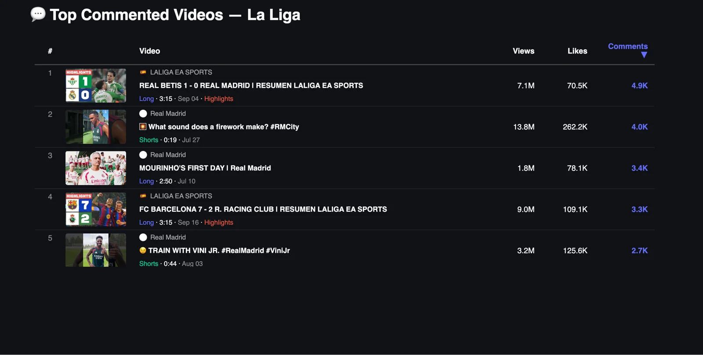
Betis 1-0 Real Madrid, in the league channel's highlights, leads with 4.9 thousand comments from 7.1 million views, one for every 1,449 views, followed by the firework clip with 4.0 thousand from 13.8 million, one for every 3,450, and the entry that tells you most is third. Real Madrid's video of Mourinho's first day, a 2:50 long-form from 10 July, drew 3.4 thousand comments from 1.8 million views, one for every 529 views, more than six times the rate of the firework clip, and the Barcelona 7-2 Racing highlights and a training Short with Vini Jr. complete the five.
A defeat for Real Madrid and the first day of a new coach produce more conversation per view than any highlight on this list, and for a journalist this is the most useful list in the tracker, because it points straight at the stories fans want to talk about.
La Liga on YouTube is two club channels, one league channel and eighteen clubs that share 17% of the views between them, and the gap is about rhythm and format, because the three channels that publish almost every day own the reach, and the clubs that go quiet for weeks at a time are invisible on the platform, whatever the size of their stadium or their history in the competition.
Engagement is the one place where the smaller clubs win, with Málaga, Osasuna and Betis ahead of both giants, and that is the asset I would build on if I ran one of them, with a daily rhythm first, a clear idea of what goes in long-form and what goes in Shorts second, and the Wednesday lunchtime rush avoided on purpose. Nobody at the top of the zero-days chart needs a bigger budget to fix the first of those, and Atlético and Athletic could each double their return per video by moving output to the format their own numbers already favour.
The hit list in part two says what that daily rhythm should carry, with the league owning match highlights and the clubs winning with trophies, tunnels, training, arrivals and a coach's first day, and none of those five formats is a match highlight that needs a rights window. Sevilla and Alavés have each shown that a single Short of the club's own moment can out-travel a Real Madrid highlight, and that is the lesson for the sixteen clubs below them.
YouTube Football Tracker
Clubs and leagues can use it to benchmark their channel against every rival and borrow what is working elsewhere, across all five big leagues. Journalists can use it to find what is breaking out on football YouTube, which club is suddenly growing and which format is taking over, with the numbers to back the story. Everything in this piece is live at ytft.aguywithascarf.com, and if you want a custom view for the clubs or leagues you follow, message me on LinkedIn.
Explore the YouTube Football TrackerYou can find me on LinkedIn, read my LinkedIn newsletter or find me on Substack.